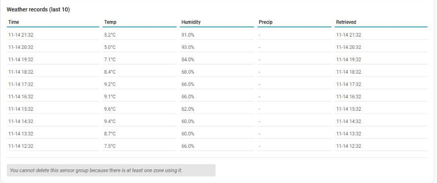

Sensor groups¶
A sensor group says where the weather data of its zones comes from, value by value. Any numeric Home Assistant sensor can be a source, whatever its origin. If a weather service is on, it can supply values too, and a static value can stand in for one you do not measure.
The sensor groups are under Weather › Sensor groups.
Continuous updates¶
The Continuous updates for all sensor groups card sits above the sensor groups and applies to every group.
Advanced mode
The card is on the advanced panel, and shows in every mode once it is on. Its Sensor debounce (100 ms by default) shows in every mode once it is changed.
Continuous updates records every change of a sensor of the group, instead of one reading per update, so the averages the calculation works from, hour by hour and for the rain, follow the day more finely. Every sensor group with sensors of its own is recorded this way, also one that takes the rest of its data from a weather service: its sensors are recorded as they change, and the service is still read once per update, so it costs no extra requests.
A rain gauge gains the most from it: the replay of the rain places what falls between two of its reports, so a gauge that reports every ten minutes places its rain within ten minutes rather than within the hour of the update.
It records and nothing more. The zones are calculated at the scheduled time, once, from the readings recorded, like any other zone. The live estimate on the Info page and the zone's Live water balance entity show where a zone stands in between, without writing anything. The debounce sets how fast changes are recorded.
With it on, a group's readings are combined differently: see the column Aggregation with continuous updates below.
Coming from an older version
Continuous updates used to calculate the zones again at every change, which moved the water balance, and the start that accounts for the duration of the run, all day.
Adding a sensor group¶
Select Add sensor group below the groups, enter a name and add it; with no group yet, the field is already open. Then choose the source of each value.
Configuring a sensor group¶
Each value can come from a weather service (once one is on), a sensor, or a static value. With a sensor or a static value, make sure the unit Smart Irrigation expects is the one your sensor gives. Use your own sensors as much as you can, and the weather service for the rest.
The group's Evapotranspiration source is always the first field, and it decides what else is asked. Left on None, the zones calculate evapotranspiration from the weather, so the readings it needs are asked: temperature, dew point, humidity, pressure, wind speed and solar radiation. Given ready-made, by a weather service or a sensor, the other readings are not asked (a note says how many); rain stays. A plain sentence under each source explains what it does.
The two choices are worded to tell them apart: None (Smart Irrigation calculates it) means the weather service, or your sensors, only supply the inputs of Smart Irrigation's own calculation, and Ready-made ET₀ from the weather service (or a sensor) means the value is taken as it comes and the other readings are not used.
The group also says when its zones and its source disagree: a zone calculated from the weather ignores a provided value, and a zone set to provided needs a source.
Some fields are only shown in advanced mode:
- Total precipitation (a rain gauge that adds up), unless it already has a source;
- How the readings are combined (average, first, last, maximum, median, minimum, Riemann sum, sum, delta).
The question Input provides values in is only asked when Home Assistant reports no unit the field can be read in, or when the stored unit contradicts what it reports.
The following data can be provided:
| Data | Required | Sources | Units | Aggregation | Aggregation with continuous updates |
|---|---|---|---|---|---|
| Current precipitation | No | Weather service, sensor, static value | mm/h, in/h | Average | Riemann sum |
| Dew point | Yes | Weather service, sensor, static value | °C, °F | Average | Last |
| Evapotranspiration | No | None (Smart Irrigation calculates it), ready-made ET₀ from the weather service, sensor, static value | mm, in | Average | Last |
| Humidity | Yes | Weather service, sensor, static value | % | Average | Last |
| Total precipitation | No | Sensor, static value | mm, in | Delta | Delta |
| Pressure | Yes | Weather service, sensor, static value | hPa, millibar, inch Hg, psi | Average | Last |
| Solar radiation | No | Weather service (or none: estimated), radiation sensor, light sensor (lux), static value | W/m², MJ/day/m², W/sq ft, MJ/day/sq ft | Average | Riemann sum |
| Temperature | Yes | Weather service, sensor, static value | °C, °F | Average | Last |
| Wind speed | Yes | Weather service, sensor, static value | km/h, m/s, mph, knot | Average | Last |
With continuous updates, every aggregation is expected to be Last, except solar radiation and current precipitation (Riemann sum) and total precipitation (Delta).
Pressure and humidity¶
- Pressure can be absolute or relative. Absolute is the pressure measured at your location; relative is the pressure brought to sea level. Check which one your source gives.
- Humidity is the humidity of the air, not of the soil. A soil moisture sensor gives no useful reading here; give it to the zone instead (see soil moisture).
Wind speed at 2 m¶
The calculation uses the wind at 2 m. A weather service's wind is converted for you. For a wind sensor, the Anemometer height field takes the height in metres your anemometer is mounted at, and the reading is brought down to 2 m with the FAO-56 wind profile (equation 47). Leave it empty if the sensor is already at 2 m; a height of 2 m, or of 0.5 m or less, leaves the reading as it is. Sensor groups made before this field existed are left as they were.
Advanced mode
Anemometer height is on the advanced panel, and shows in every mode once it is set.
Instead of the field, you can make a template sensor return the wind at 2 m yourself:
template:
- sensor:
- name: Wind speed at 2 m
state: >-
{{ states('sensor.your_wind_speed') | float(0) * (4.87 / log(67.8 * 10 - 5.42)) }}
Replace sensor.your_wind_speed with your sensor, and 10 with the height of the anemometer in metres. The result is in the unit of your sensor.
Rain¶
Current precipitation is a rate (mm/h or in/h), and total precipitation a depth (mm or in) over the interval. Only one of them feeds the water balance: total precipitation when it has a value, current precipitation only when it does not. A rain rate sensor is never counted on top of a rain gauge.
- Total precipitation is for a rain gauge of your own that adds up, which is more accurate than any service. Use the
Deltaaggregation with a sensor that accumulates over a period ("daily rain", "weekly rain", "total rain"): it handles resets, such as a daily total going back to zero at midnight. It takes precedence over the service's rate, so the two are never added together. - Current precipitation with
Averageuses the mean rate over the interval, which is right for evenly spaced samples; withRiemann sumthe samples are integrated over their own timestamps, which is more accurate when they are not evenly spaced.
A weather service supplies the rain that fell, not the daily total. A service's daily precipitation figure is a forecast for the part of the day that has not happened yet, so crediting it would add rain that may never fall. With a weather service, leave total precipitation unset and take current precipitation from the service. How the rain is measured depends on the service:
- Open-Meteo keeps an hourly precipitation history. At every calculation the rain of each full hour since the last calculation is read from it and credited, so every hour counts once, however often weather data is collected. If the history cannot be read, the sampled rate is used, as for the other services.
- OpenWeatherMap reports the rain of the last hour and Pirate Weather the rate at this instant. That rate is collected at every update and integrated over the interval since the last calculation.
With OpenWeatherMap or Pirate Weather, set the automatic update interval to 1 hour or shorter. These services report the last hour only, so collecting every few hours leaves the hours in between unobserved, and rain falling in them is not counted. Only the hours actually observed are credited, so a coarse interval under-reports rain rather than scaling up what it happened to see. A warning is logged if the interval is longer than an hour. Open-Meteo's rain does not depend on the update interval.
A weather entity of Home Assistant reports no rain that fell: give the group a rain sensor.
Greenhouse¶
A sensor group has a Greenhouse switch, for anything under glass or plastic: a greenhouse, a polytunnel. Turning it on takes precipitation out of the water balance for every zone of that group and hides its rain fields, because rain measured outside waters nothing inside.
A rain forecast is a statement about the sky. When it would skip a run, the zones of a greenhouse group go ahead and only the zones the rain can reach are held back. Their deficit is untouched and rolls over to the next run. If nothing in your installation is under glass, the run is skipped as before.
Two things the switch does not decide for you:
- give Wind speed a static value near 0, because the FAO-56 aerodynamic term assumes open air;
- give Solar radiation a light sensor, as below.
A light sensor can stand in for a solar radiation sensor. Under glass there is no usable sky, so a weather service has nothing relevant to say, and the calculation loses the term that drives it. Most greenhouses have no pyranometer, but a light sensor is cheap and common. Set the source of solar radiation to Light sensor (lux), pick your illuminance entity, and the reading is converted to W/m² and fed to the same Penman-Monteith calculation a real radiation sensor would feed.
The conversion divides lux by the luminous efficacy of daylight, and that efficacy depends on the sky: roughly 112 lm/W under a clear sky and up to 125 or more under an overcast one. Smart Irrigation uses the model of Muneer and Kinghorn (1997), Kg = 136.6 - 74.541 Kt + 57.3421 Kt² in lm/W, where Kt is the clearness index: the global radiation over the radiation at the top of the atmosphere on a horizontal plane. The position of the sun at the sensor's coordinates, the date and the time, gives that ceiling, so the season and the hour are taken into account. There is no efficacy field to set. When the sun is lower than 5 degrees, or there are no coordinates, the middle of the range (113.7 lm/W) is used. A value stored by an older version is still honoured. Glass shifts the spectrum a little, which the model does not describe; the error stays within a few percent.
If you would rather not use this, a template sensor that converts your lux entity and is reported in W/m² reaches the same result through the radiation sensor source.
Weather service history¶
The weather service history, under Weather › Weather service, only shows values supplied by the weather service. A field whose source is a sensor appears as - there.
Silent sensors¶
When a temperature, humidity, dew point, wind speed or pressure source of a sensor group stops reporting for more than 6 hours, Smart Irrigation says so instead of calculating on old data without a word. Every 15 minutes it looks at the groups that automatic zones use:
- A notice appears in Settings › Repairs, one per sensor group, naming the silent sensors and since when. It disappears by itself when they report again.
- The event
smart_irrigation_weather_staleis fired once when a field goes silent, andsmart_irrigation_weather_recoveredonce when it is back, so an automation can notify you. See the output contract. - A sensor counts as reporting when its entity state was updated. A field read from the weather service counts as reporting when the group last received data from it successfully.
- Fields mapped to nothing or to a static value are not watched. After a restart of Home Assistant, a weather service is given the full 6 hours again before it can be called silent.
Deleting a sensor group¶

Use the button at the bottom of a group to delete it. Only a sensor group that no zone uses can be deleted.